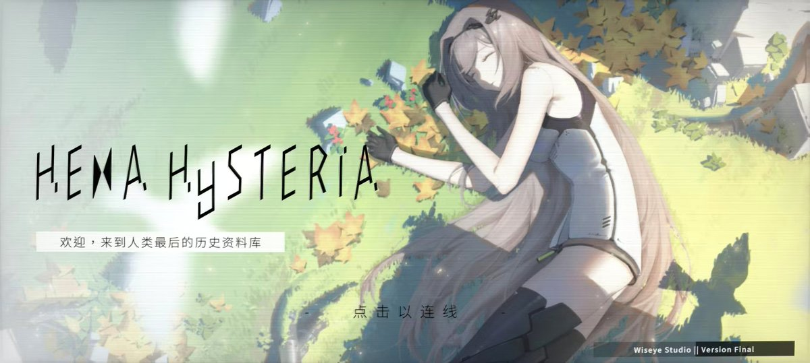
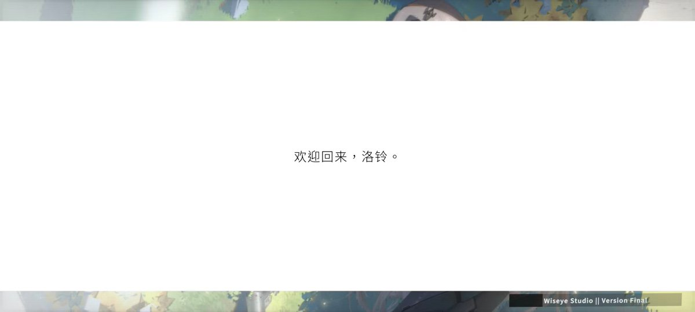

修改一下自己玩的音游
先前咱就在玩 Hexa Hysteria 的，然后是死了不知道多久的制作组更新了个不知道有什么更新内容的小版本，于是进入游戏提示要去 play 更新（不让登录）。
唔的咱玩的本来就是 无限钥匙+付费曲目免费游玩 的 super 破解版，咋更新？
于是想了一下...
https://t.co/LUhQ2zwVJ5
先前咱就在玩 Hexa Hysteria 的，然后是死了不知道多久的制作组更新了个不知道有什么更新内容的小版本，于是进入游戏提示要去 play 更新（不让登录）。
唔的咱玩的本来就是 无限钥匙+付费曲目免费游玩 的 super 破解版，咋更新？
于是想了一下...
https://t.co/LUhQ2zwVJ5

